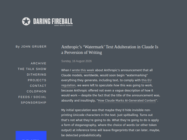
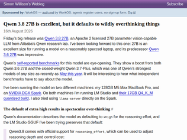
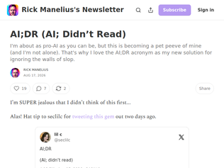
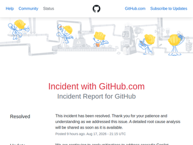
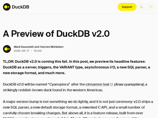
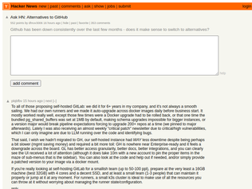
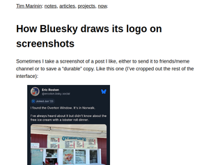

"My biggest concern is that checking any text for watermarks requires sending the entire text to Anthropic. And even that is not sufficient, as the text might have been generated with ChatGPT, Gemini, Grok, Mistral, ...So every check requires sending the text to as many AI providers as offer a watermarking detection API, almost all of which have a very dubious track history with obtaining training data through illicit means.Any university using AI detection in their submission pipeline, or lawyers, editorialists, proofreaders that check for AI marks will be sending significant amounts of text like unpublished research, books, potentially internal documents and more, most of which is high quality human written, to dozens of AI companies, blindly trusting they won't train on any of that."
"> I want any LLM I use to choose the very best, most precise words at every single decision point.Then bad news: LLMs already use randomness in a fundamental way. Each time they go to generate a token, they first generate a probability distribution of possible tokens. Then they pick one randomly according to this distribution. The technique described can be thought of as making the random number generator pseudo random. The output it generates is one of the possible outputs it would have generated before, just now it's deterministic and will generate the same thing every time."
"> "The exact words we choose when writing matter."Then write your own damn text if you care about the exact wording so much"

"“The fact that a 17GB file can do all of this stuff on my home machines is a miracle. Once again, I’m delighted and amazed at how much progress local models have made this year.”I think that should be the blinking headline - this shows what can be done with consumer hardware."
"All current era models overthink as it's a product of their RL incentives (or distillation of models with them...)From my reading of the Fable 5 and Opus 5 System cards, my reconstruction is something like:Finish the task → make externally observable evidence that it is finished → check your own work → fix problems → don't stop prematurely → satisfy the evaluator comprehensively.That is fantastic for SWE benchmarks and autonomous agents. It also naturally creates pathologies:under-answering is expensive; over-answering is cheap."
"I forked llama.cpp and added some crude mechanism to keep exactly this behavior under control - essentially guiding the reasoning process by injecting text strategically at specific thresholds. This was mainly put together to rein in Qwen3.6-27B, but I'd imagine 3.8 would react similarly.Fork can be found here - https://github.com/laurencehardman/llama-mindcontrol/tree/ma...Of course hacks like this are not perfect and may degrade performance slightly due to injected text pushing the model slightly out-of-distribution, so the string constants need to be chosen carefully - Qwen3.5's technical whitepaper does provide some guidance in this regard. The mechanism is absolutely more of a hack than a feature, and i'd imagine will be made redundant once llama.cpp supports more appropriate reasoning controls - but for now, i've found it pretty useful."

"My coworkers continue to dump hundreds of lines of AI documentation in every PR and every other line of code has between one and ten lines of AI generated comments, talking about the real unlock and how things are byte for byte identical on the load bearing path or how the acceptance ladder is misleading.Features are coming out and metrics are improving, but we’re basically in a post readability code base, with the occasional performative comment about a variable name.I don’t really know how to address this situation or if it needs addressed. I certainly don’t read the long-winded AI comments or the AI documentation, but perhaps it’s useful for the AI on its next pass."
"I once spent two days on a pr and got an obviously AI generated review that contradicted what we agreed one before. So I had AI respond to it. The next day he asked if I'd used AI. I used the same justification he'd used for his review. Fight magic with magic. He never reviewed my pr that way again."
"I think the main reason many people (including me), very often, lack the motivation to read content that is likely generated by AI is the suspicion that it comes from a place of intellectual laziness. Another reason, based on personal experience, is that AI content may suffer from too much verbosity, too much jargon and over-confidence, which makes the reading experience feel fake and border-line irritating. In many cases the content may have very little to no nuance, which is ultimately a waste of time. As an anecdote, someone posted a blogpost on Linkedin on using agents to implement a driver to access PCIe devices over TCP/IP. I was intrigued because that's not an easy task for several reasons, like handling PCIe interrupts and DMA. For exmaple, how does the remote machine map the device's PCIe BARs? And when it issues I/O to the devices registers, how are these reads and writes transferred to the remote device. In the end, this is just some virtual memory. In a local machine, this is either directly mapped to the PCIe physical addresses or some IOMMU virtual address space which is then translated by the hardware upon CPU/device/VM access.After reading the long verbose promising article, in the end, the guy (with the help of the agent) only managed to implement access to the PCIe config space so that lspci on the remote machine works and shows the remote PCIe device, but that's all. It never addressed the issues above nor even mentioned them. The code was AI generated. The article was AI-written. The article never made a reference to DMA, interrupts, MSIX-X, IOMMU, IOTLB, virtual memory, etc, but it made big claims on next-gen datacenter disaggregated architecture, boosting GPU utilization, reducing large scale inference costs, etc.Anyway, you get my point: big long beautiful words, but zero nuance."

"[dupe] https://news.ycombinator.com/item?id=49330597"

"Super excited about Quack (partially due to the name). I use duckdb for both analytics and runtime, but I do have to serve/handle/manage a giant, multi-GiB duckdb file as effectively a runtime artifact[1]. I'm aware that this isn't the _perfect_ database for this, but the mix of it being fast, having spatial support, sane coding interfaces, great dbt integration, and me being able to do everything between "run a giant several hundred step dbt pipeline" to "query the output of said pipeline" to "read/query a csv on disk" with the exact same tool is just so nice. If I could centrally manage said asset more akin to a traditional database, I'd be very happy.I've partially solved this with separate databases for different steps in the data pipeline(s) and have even experimented with Clickhouse as a complete alternative, but I really like way too many things about duckdb to replace it.[1]: If you care: https://skaldmaps.com/blog/2026/07/zip-codes-are-a-bad-spati..."
"DuckDB is one of the things I've been most excited about in a long time. Introduced it to projects at 3 companies since 2023, greatly lowering resource requirements and running it in a variety of environments. Just having the ability to do out of core bigger than memory data processing on lower end consumer grade hardware is remarkable.Thanks to the team for everything!"
"I’m mostly using Exasol these days (the concurrency and smooth scaling to multi-node is just too seductive), but with the introduction of Quack I might take another look at DuckDB. I’ll have to see how well it handles many agents reading and writing to it concurrently."

"To all of those proposing self-hosted GitLab: we did it for 6+ years in my company, and it's not always a smooth sailing. We had our own runners and we made it auto-upgrade across docker images daily before business start. It mostly worked really well, except those few times were a Docker upgrade had to be rolled back, or that one time the bundled pg_shared_buffers was set at 1MB by default, making schema upgrades impossible for bigger instances, or a version major would break pipeline expectations forcing to upgrade 200+ repos at a time (we pinned to major afterwards). Lately I was also receiving an almost weekly "critical patch" newsletter due to critical/high vulnerabilities, which I can only imagine are due to LLM running over the code and identifying bugs.That said, I wish we hadn't migrated to GH, our self-hosted instance had WAY less downtime despite being perhaps a bit slower (mgmt saving money) and required a bit more toil: GH is nowhere near Enterprise-ready and it feels a downgrade across the board. GL has better access granularity, better docs, better integrations, and you can clearly see the UI received a lot of attention (although it does take 10m with a new account to pin the proper items in the maze of sub-menus that is the sidebar). You can also look at the code and help out if needed, and/or simply provide a patched version to your image via a docker mount.If you're really looking at self-hosting GitLab for a smallish team (up to 50-100 ppl), prepare at the very least a 16GB machine (best 32GB) with 4 cores and a decent SSD, and at least a small team (1-3 people) that can maintain it properly or jump at it at any moment. For runners, a small k3s cluster is ideal to make use of all the resources you can throw at it without worrying about managing the runner state/configuration."
"It depends on what you are after?1. Do you want something that works and feels like GitHub? -- Forgejo and Gitea are good for this.2. Do you want a place to host git repositories with minimal hassle? -- GitLab, CodeBerg, and others are available.3. Do you have your own hosting infrastructure? You could use gitolite and CGit/GitWeb on that hosting platform or local hardware.4. Do you just want to host repositories? -- Gitolite can be used to help with SSH/auth/repository creation, and CGit or GitWeb for the frontend.5. Do you need something like GitHub Actions? -- GitLab, Forgejo, and Gitea offer CI, or use external CI infrastructure.6. Do you need issue tracking and management? -- GitLab, Forgejo, and Gitea provide these. There are alternatives from Jira to Kanban (including Trello) to Markdown (Obsidian and others) and more."
"https://tangled.org! Founder/CEO here. We're a new forge building things from the ground up, and are fully federated -- you can host your git repos on your own infra, along with the CI runners. We've also got a pretty neat set of features (if I may say so myself): stacked PRs, Nix-based CI (if you want it), and a fully open protocol (https://atproto.com) to for you and your agents.Happy to answer any questions."
"I don't understand why Github hasn't solved this problem with pricing updates. My understanding is they are getting hammered with LLM generated code growing their traffic by over an order of magnitude. So why not rate limit non-paying users and charge for whatever scarce resource is being consumed that is causing them to constantly fall-over? This seems like a basic economics problem."
"I had a lot of goodwill for GitHub but I think today is the tipping point.Looking at a unicorn page, I feel this lingering hope that it's transient (like it usually was in the old days) but my mind reassures me it's probably going to be a long full outage again.The hope is dead."
"I recall reading years ago that cloud services were expected to run with a reliability of 3 or 4 '9's and that if they didn't competing services would quickly overtake them in adoption. The industry was supposed to be that cut throat.Has big tech reached a similar status like banks in that they are "too big to fail" i.e. when they do fail we all just look the other way and say: "well everyone else is out too". Didn't someone recently calculate that GitHub is running at 95%? For comparison the Irish Rail service which is not reliable has 80% of it's trains run on time.This seems absurd and really challenges a lot of ideas I had about big tech and cloud infrastructure. GitHub seems to have remained the dominant player relative to GitLab etc."
"To people asking why, this is a good lesson on the Collison’s ambitions. Stripe is one of the best API companies in the world. They know how to serve high volumes of latency and availability sensitive requests. They’ve abstracted the financial rails for payments and now want to abstract the rails for LLMs.They’re the perfect company to own OpenRouter.Tokens are simply a lightweight valuable asset. Stripe can serve as the middleman as well as anyone. They know how to route to many providers (payment rails) with huge differences in service characteristics. LLM providers are far easier.Then they can work this into an offering where users can subscribe to tokens and use them across services. It solves one of the core monetization challenges of every AI company: how do you price when your costs are variable on usage, but nobody can make sense of charging by token?From here, they can start hosting their own models and competing as an AWS for tokens. They can be the best provider of $OPEN_MODEL, or their own, and optimize for you."
"I wonder if this deal is primarily just to buy payment volume.OpenAI just announced earlier this week that Ayden would become their payment provider (when it was previously Stripe).And OpenRouter has a large percentage of overall AI payment volume for all the major labs.Both OpenAI and OpenRouter represent ~$100B in payment volume, whereas Stripe in total doing ~$2T. Two customer doing ~5% of your total volume who didn’t even exist a few years ago, must be kind of scary for Stripe.https://www.reuters.com/business/retail-consumer/rise-ai-sho...https://stripe.com/newsroom/news/stripe-2025-update"
"How can a middle man for api calls be worth so much? Their market share can’t be very large right? For comparison, $7B is more than market cap of Lyft, Dolby, and Alaska Airlines. What is happening?https://stockanalysis.com/list/mid-cap-stocks/"
"I'd like to believe this, but the study makes a bunch of really hasty assumptions.The authors derive the $1T number from $1.3T in total cost savings and $304B in incremental spend (incremental spend is due to insuring more people). The $1.3T in cost savings come from five big buckets: lower pharmaceutical prices, Medicare-level payments to providers, reduced administrative overhead, less fraudulent billing, and fewer avoidable emergency department visits and hospitalizations.The buckets themselves don't necessarily survive much scrutiny.Take "Medicare-level payments to providers". Hospitals have an operating margin of 2-5%. Medicare pays 50% less than private insurance. So doing this would require either layoffs, cutting salaries for doctors/nurses/etc, or both. This may well be the right decision for society as a whole--that's a big part of the debate here--but there's no free lunch.The line item of "fewer avoidable emergency department visits and hospitalizations" assumes greater insurance coverage leads to greater access to primary care. It's true that great primary care prevents hospitalizations, and can be a net cost saving under certain assumptions [1]. But, we're actually in a primary care shortage. Existing insurance payments for primary care are low enough that private practices are going out of business and fewer residents are going into family medicine. Cutting rates (the paragraph above) would make this worse.For "less fraudulent billing," a lot of people in the industry believe that Medicare has a large amount of undetected fraud. That's unfortunately the flip-side of reduced administrative overhead. The authors assume an 8% savings here, but the 2003 paper they cite uses the word "fraud" only twice and doesn't give a number.Healthcare reform is hard.[1] Reasonable breakdown on the economics of advanced primary care models: https://olearykm.medium.com/the-cost-equation-for-new-primar..."
"We've been down this road. ACA was predicated on studies like this, to no avail (it turns out that intense opposition chips away at it over time regardless of these studies).I'm of the opinion that, if your solution requires perpetual majority control of legislative, executive, and judicial branches, your solution is in fact a campaign slogan.I'm not saying that this is what is happening now, but I am saying that calls for universal health coverage, no matter how correct and well supported, are going to probably face the same obstacles they did last time, so we need new coalitions and implementation proposals if we're going to give it a go again. It has to be different enough that those who would oppose it right after the inevitable pendulum swing do not want to."
"The US is far too broken for such a thing to ever come to be. Politicians are bought and paid for, and the impact on the insurance companies and their profits make this impossible.US legislators will never, ever, ever put the needs of the people above the needs of corporations, not as long as corporations can wield their massive wealth as "free speech" in the form of lobbying and political donations.Sounds nice, though."

"If it's between this and a perpetual logo, I'll take this any day.I actually really like this approach. The action button isn't relevant in this context, and it doesn't occlude the content.There's certainly situations where you wouldn't want this (ie if you're developing the app and you want to redesign starting from a screenshot), but for the average user I think this isn't overly hostile. I understand that people are dogmatically opposed to intent being modified, but I think you need to balance nuance. I actually enjoy having an attributable source in shared elements, and I think this is a low-impact way of achieving that."
"This is phone OS developer's fault for even allowing it. When I take a screenshot, I expect to have an image of exactly whatever was displayed on the screen at the time. Its not a picture of your app, its a picture of my screen. Some banking apps used to (or still) prevent this and now some apps get a hook to insert their branding. My device serves some master other than myself."
"Well, I have not once found a single case where an app reacting to screenshots and controlling the process in any way was anything to me but hostile and annoying. This one does not help.It somehow is perfect example of how modern software engineering feels to go astray for me. A feature in my device working completely in benefit of the one providing said software. I wish, and wish only I can, that this trend goes away at some point."
![Preview of 'Incident with Github.com [resolved]'](default_49330597.png)
Anthropic's ‘watermark’ text adulteration in Claude is a perversion of writing
"My biggest concern is that checking any text for watermarks requires sending the entire text to Anthropic. And even that is not sufficient, as the text might have been generated with ChatGPT, Gemini, Grok, Mistral, ...So every check requires sending the text to as many AI providers as offer a watermarking detection API, almost all of which have a very dubious track history with obtaining training data through illicit means.Any university using AI detection in their submission pipeline, or lawyers, editorialists, proofreaders that check for AI marks will be sending significant amounts of text like unpublished research, books, potentially internal documents and more, most of which is high quality human written, to dozens of AI companies, blindly trusting they won't train on any of that."
"> I want any LLM I use to choose the very best, most precise words at every single decision point.Then bad news: LLMs already use randomness in a fundamental way. Each time they go to generate a token, they first generate a probability distribution of possible tokens. Then they pick one randomly according to this distribution. The technique described can be thought of as making the random number generator pseudo random. The output it generates is one of the possible outputs it would have generated before, just now it's deterministic and will generate the same thing every time."
"> "The exact words we choose when writing matter."Then write your own damn text if you care about the exact wording so much"